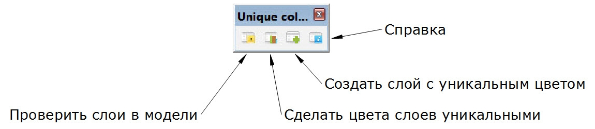

Список изменений
08 октября 2014 - версия 1.0 - Первый релиз
Описание
Плагин для Sketchup 2014 для создания уникальных цветов для слоев модели Sketchup. С помощью этого инструмента можно организовать работу со слоями более эффективно. Особенно, когда необходимо сделать экспорт слоев в AutoCAD. Плагин может менять цвета любого слоя, кроме слоя "Layer0"
Список функций:
- Анализ цветов слоев модели
- Изменение слоев имеющих неуникальные цвета случайным образом
- Создание нового слоя с уникальным цветом
Использование
Использовать можно как через главное менб программы так и с помощью панели инструментов
Plugin > Unique colors for layers
-

- Check colors of layers (Проверить слои в модели) - Анализ слоев в модели Sketchup. Если все цвета слоев имеют уникальный цвет, то появится сообщение "All layers in model have unique colors". В другом случае появится сообщение "Model has N layer(s) with non-unique color(s). Fix it?". Если нажать "Yes", все слои , которые имеют не уникальные цвета будут иметь уникальный цвет который выбирается случайным образом.
- Make unique colors for layers (Сделать цвета слоев уникальными) - Создает уникальные цвета для "Non-unique" (не уникальных) или "All"(Всех) слоев в модели. Предварительная проверка не проводится.
- Create new layer with unique color (Создать слой с уникальным цветом) - Создание нового слоя который будет иметь уникальный цвет. будет полезно в том случае, когда надо контролировать уникальность цветов в дальнейшем.
- Help (Справка) - Открытие файла справки (этой страницы).
Установка
Плагин работает только в Sketchup 2014. Установите новую версию программы перед использованием плагина. Installing Ruby Plugins in SketchUp